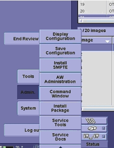
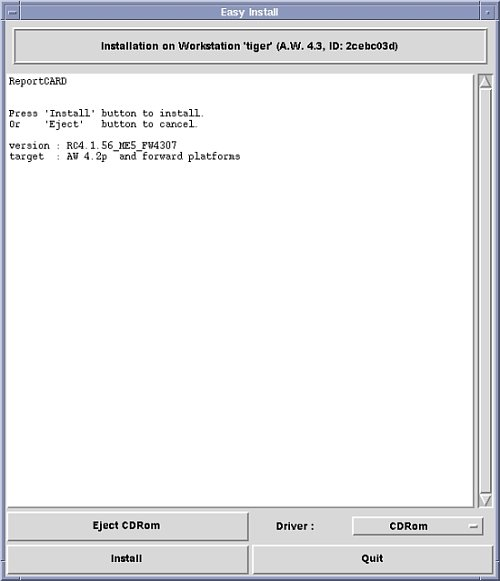
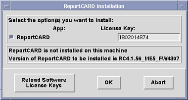
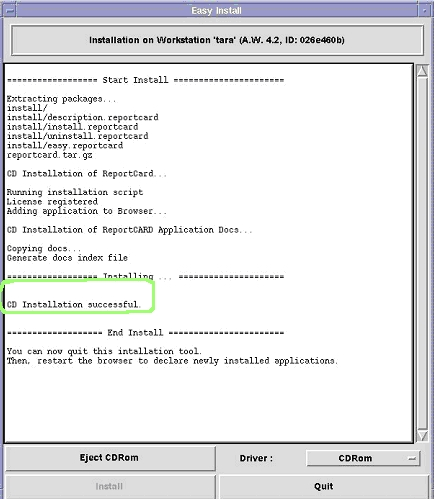
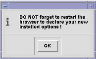
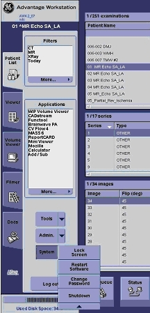
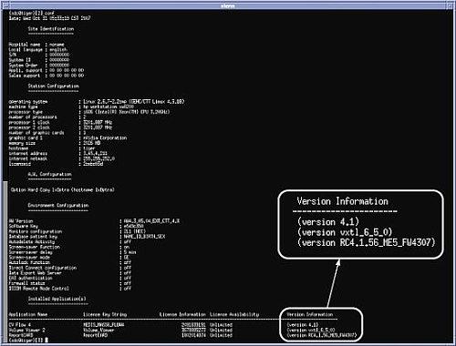
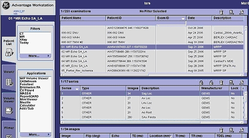
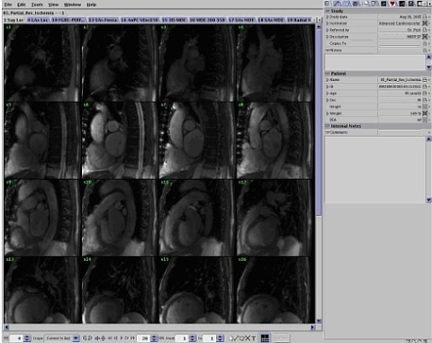
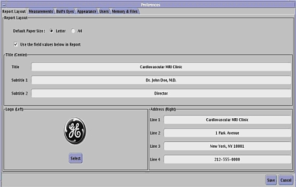

Operating Documentation
Direction 5500113, Rev# 3
Discovery MR750 3.0T Service Methods
Module Version 1.0, Version Date 6/30/08
Operating Documentation |
| Required Persons | Preliminary Reqs | Procedure | Finalization |
|---|---|---|---|
| 1 | Not Applicable | 60 mins | Not Applicable |
The ReportCARD 4 application is a reviewing and reporting application for Magnetic Resonance Imaging (MRI) data, in particular, Cardiac MRI. It provides simultaneous reviewing and report creation of cardiac MR exams with multiple series containing DICOM images. Multi-phase cardiac images are automatically displayed as time-lapse animations with no user interaction.
This tool is capable of automated calculation of all quantitative results derived from user measurements. It also includes automatic body surface area correction for appropriate cardiac analysis. Once the image analysis is completed, the physician can approve the report using the signature feature.
The ReportCARD 4 application is designed to run on the AW4.2P and forward AW platforms only. For more information about installing an advanced application option on the AW, see the current revision of the appropriate AW Service Manual at http://aw-ib.euro.med.ge.com.
Create an AW 'Config' media before and after the application software installation for use as needed throughout this and other AW service activities.
Configuration information can be read on a PC by viewing the config.txt using text readers like WordPad, Internet Explorer or MSWord.
To read a Save Configuration using a CD-ROM: Insert the disk and type the following into a C Shell:
mount /mnt/cdrom
cd /mnt/cdrom
more (“backup directory name”)
cd/
unmount /mnt/cdrom
| Item | Qty | Effectivity | Part# | Manufacturer | |
|---|---|---|---|---|---|
| ReportCARD 4 software and documentation CD-ROM | 1 | - | - | - | |
| Condition | Reference | Effectivity |
|---|---|---|
If ReportCARD is not already loaded on the system or a valid license key is unavailable, you can generate the software key through elicense using the Global Order Number (GON). Contact the Advantage Workstation Online Center for assistance generating the key. | - | - |
Log in to the Advantage Workstation (AW): login name: sdc, password: adw4.x, where x represents the version of AW that you are working on.
Insert the ReportCARD 4 CD into the AW drive.
When the AW displays, click on [Admin] in the bottom left of the Patient List. A menu of the available applications opens. See Illustration 1.
Illustration 1: Admin Menu

Select Install Package. The Easy Install window opens.
Illustration 2: Easy Install Window

From the Driver menu, select CDRom.
Click [Contents], and then click [Install] to start the installation process.
The ReportCARD Installation dialog box displays, and asks you to enter the software protection license key.
Illustration 3: ReportCARD Installation License Key Dialog Box

| NOTE: | If ReportCARD is already on the system, the field should auto-fill. If it is not auto-filled or this is the first load, enter the software key that was generated through elicense using the Global Order Number. |
Click [OK] to install ReportCARD 4.
This process takes 10-15 minutes. When the installation is complete, a CD Installation Successful message displays in the Easy Install window.
Illustration 4: Installation Complete Message

Click [Eject CDRom] to remove the CD, and then click [Quit].
When the information dialog box displays, click [OK], and proceed with restarting the system.
Illustration 5: Restart Dialog Box

To restart the system, click [System], and select Restart Software.
Illustration 6: System Menu Restart

Proceed to Confirming the Installation.
Click on [Admin] as shown in Illustration 1, and select Display Configuration.
When the configuration window opens, confirm that the correct version of ReportCARD displays in the lower right-hand corner.
Illustration 7: Configuration Window

In the Advantage Workstation window, select any data set.
From the left navigation menu, select ReportCARD.
If the ReportCARD option is not visible, expand the more menu to see it.
Illustration 8: Advantage Workstation Window

The ReportCARD window opens over the entire screen. The display shows images from series one (1) of the select exam.
Illustration 9: ReportCARD Window Images

From the Edit menu, select Preferences.
The Preferences window displays. See Illustration 10. Choose the Default Paper Size and click [Save]. The Preferences window closes.
Illustration 10: Preferences

From the File menu in the ReportCARD window, select Quit to exit the application.
After the initial installation, the ReportCARD 4 application must be accessed from the Global Install Base (GIB) database in order to fulfill FDA product-tracking requirements. Call the AW Online Support Center for assistance or go to the GIB at http://gib.gehealthcare.com.